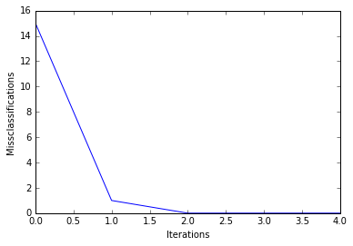

Perceptron
Implementation of a Perceptron learning algorithm for classification.
from mlxtend.classifier import Perceptron
Overview
The idea behind this "thresholded" perceptron was to mimic how a single neuron in the brain works: It either "fires" or not. A perceptron receives multiple input signals, and if the sum of the input signals exceed a certain threshold it either returns a signal or remains "silent" otherwise. What made this a "machine learning" algorithm was Frank Rosenblatt's idea of the perceptron learning rule: The perceptron algorithm is about learning the weights for the input signals in order to draw linear decision boundary that allows us to discriminate between the two linearly separable classes +1 and -1.

Basic Notation
Before we dive deeper into the algorithm(s) for learning the weights of the perceptron classifier, let us take a brief look at the basic notation. In the following sections, we will label the positive and negative class in our binary classification setting as "1" and "-1", respectively. Next, we define an activation function
where
In order to simplify the notation, we bring
so that
and
Perceptron Rule
Rosenblatt's initial perceptron rule is fairly simple and can be summarized by the following steps:
- Initialize the weights to 0 or small random numbers.
- For each training sample
$\mathbf{x^{(i)}}$ :- Calculate the output value.
- Update the weights.
The output value is the class label predicted by the unit step function that we defined earlier (output
The value for updating the weights at each increment is calculated by the learning rule
where
aIt is important to note that all weights in the weight vector are being updated simultaneously. Concretely, for a 2-dimensional dataset, we would write the update as:
Before we implement the perceptron rule in Python, let us make a simple thought experiment to illustrate how beautifully simple this learning rule really is. In the two scenarios where the perceptron predicts the class label correctly, the weights remain unchanged:
$\Delta w_j = \eta(-1^{(i)} - -1^{(i)})\;x^{(i)}_{j} = 0$ $\Delta w_j = \eta(1^{(i)} - 1^{(i)})\;x^{(i)}_{j} = 0$
However, in case of a wrong prediction, the weights are being "pushed" towards the direction of the positive or negative target class, respectively:
$\Delta w_j = \eta(1^{(i)} - -1^{(i)})\;x^{(i)}_{j} = \eta(2)\;x^{(i)}_{j}$ $\Delta w_j = \eta(-1^{(i)} - 1^{(i)})\;x^{(i)}_{j} = \eta(-2)\;x^{(i)}_{j}$
It is important to note that the convergence of the perceptron is only guaranteed if the two classes are linearly separable. If the two classes can't be separated by a linear decision boundary, we can set a maximum number of passes over the training dataset ("epochs") and/or a threshold for the number of tolerated misclassifications.
References
- F. Rosenblatt. The perceptron, a perceiving and recognizing automaton Project Para. Cornell Aeronautical Laboratory, 1957.
Examples
Example 1 - Classification of Iris Flowers
from mlxtend.data import iris_data
from mlxtend.evaluate import plot_decision_regions
from mlxtend.classifier import Perceptron
import matplotlib.pyplot as plt
# Loading Data
X, y = iris_data()
X = X[:, [0, 3]] # sepal length and petal width
X = X[0:100] # class 0 and class 1
y = y[0:100] # class 0 and class 1
# standardize
X[:,0] = (X[:,0] - X[:,0].mean()) / X[:,0].std()
X[:,1] = (X[:,1] - X[:,1].mean()) / X[:,1].std()
# Rosenblatt Perceptron
ppn = Perceptron(epochs=5,
eta=0.05,
random_seed=0,
print_progress=3)
ppn.fit(X, y)
plot_decision_regions(X, y, clf=ppn)
plt.title('Perceptron - Rosenblatt Perceptron Rule')
plt.show()
print('Bias & Weights: %s' % ppn.w_)
plt.plot(range(len(ppn.cost_)), ppn.cost_)
plt.xlabel('Iterations')
plt.ylabel('Missclassifications')
plt.show()
Epoch: 5/5 | Elapsed: 0:00:00 | ETA: 0:00:00

Bias & Weights: [ 0.0097627 0.08408412 0.31449279]

API
Perceptron(eta=0.1, epochs=50, shuffle=False, random_seed=None, zero_init_weight=False, print_progress=0)
Perceptron classifier.
Parameters
-
eta: float (default: 0.1)Learning rate (between 0.0 and 1.0)
-
epochs: int (default: 50)Number of passes over the training dataset.
-
shuffle: bool (default: False)Shuffles training data every epoch if True to prevent circles.
-
random_seed: intRandom state for initializing random weights.
-
zero_init_weight: bool (default: False)If True, weights are initialized to zero instead of small random numbers in the interval [-0.1, 0.1]; ignored if solver='normal equation'
-
print_progress: int (default: 0)Prints progress in fitting to stderr. 0: No output 1: Epochs elapsed and cost 2: 1 plus time elapsed 3: 2 plus estimated time until completion
Attributes
-
w_: 1d-arrayWeights after fitting.
-
cost_: listNumber of misclassifications in every epoch.
Methods
fit(X, y, init_weights=True)
Learn weight coefficients from training data.
Parameters
-
X: {array-like, sparse matrix}, shape = [n_samples, n_features]Training vectors, where n_samples is the number of samples and n_features is the number of features.
-
y: array-like, shape = [n_samples]Target values.
-
init_weights: bool (default: True)Re-initializes weights prior to fitting. Set False to continue training with weights from a previous fitting.
Returns
self
net_input(X)
Net input function
predict(X)
Predict class labels of X.
Parameters
-
X: {array-like, sparse matrix}, shape = [n_samples, n_features]Training vectors, where n_samples is the number of samples and n_features is the number of features.
Returns
-
class_labels: array-like, shape = [n_samples]Predicted class labels.